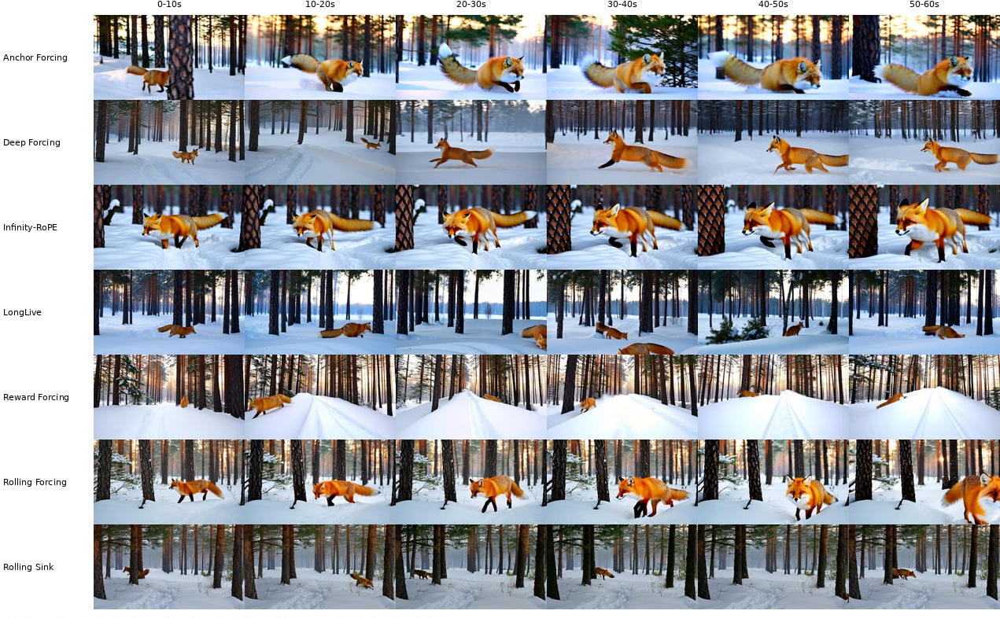

Fast-weight memory for long video generation
Aden Elmi
Research project, March to September 2026

Abstract
Streaming video diffusion models generate a video a few frames at a time and attend only to a short window of recent frames. When the frames that introduced a subject leave that window, the subject's appearance starts to drift. After benchmarking eight such models, I added a fast-weight memory to the best of them (Wan2.1-T2V-1.3B with Anchor-Forcing): an MLP added to a few transformer blocks, whose weights are updated during generation, with each chunk that leaves the attention window. I trained it in four runs and evaluated every checkpoint twice, with the memory active and with it zeroed. Identity was lower with the memory active at 10 of the 15 checkpoints. The checkpoints that froze got high subject-consistency scores from VBench, which suggests that the objective and the metrics reward frames that resemble the previous ones, and a memory can provide that without recalling the subject.
Starting point
Before adding anything, I compared recent streaming video models built on Wan2.1-T2V-1.3B, running each released model on the same prompts: six 60-second videos from a single prompt, and nine 60-second stories told in six prompts.

| 60 s, single prompt (VBench) | Quality | Dynamic |
|---|---|---|
| Anchor-Forcing | 83.1 | 83.3 |
| Reward Forcing | 82.0 | 66.7 |
| Deep Forcing | 79.7 | 50.0 |
| Rolling Sink | 78.5 | 33.3 |
| LongLive | 78.3 | 33.3 |
| Infinity-RoPE | 77.9 | 33.3 |
| ShotStream | 76.7 | 16.7 |
| Rolling Forcing | 76.6 | 16.7 |
Six prompts and one seed per method. ShotStream generates 30 seconds instead of 60.
Anchor-Forcing had the highest quality and the most motion on both sets; on the multi-prompt stories its quality score was 85.7, against 77.1 for LongLive. I built on it, after reproducing it in my own setup: on 128 MovieGen prompts at 30 seconds its VBench quality score is 84.85, against 84.40 reported in the paper on a different prompt set. Training-free ways of keeping identity, such as averaging evicted frames into the sink, did not work, so I trained a memory with the model.
Method
The model generates 3 latent frames at a time and attends to 12: the first 3 frames of the video, kept for the whole generation (the sink), and the 9 most recent. Older frames are dropped. A prompt like "a woman in a red coat" fits many women. Once the frames that showed this one are gone, her face and clothes start to change.
In runs 2 to 4 the memory is written with the chunk that has just left the window. Run 1 writes the chunk being generated instead, which attention can already see. The memory can be added to any set of blocks; in these runs it is in three of the 30, blocks 5, 16 and 27.

The state \(W\) is a SwiGLU MLP \(f_W\) (1536 → 6144 → 1536), about the size of the block's feed-forward layer, following LaCT. The chunk being generated reads it with its queries \(q\); the evicted chunk writes to it with its keys and values \(k, v\) and learning rates \(\eta_i\) predicted for each token, through Muon:
The last line keeps the state from growing over the roughly 80 writes of a one-minute video. In runs 3 and 4 the state also decays at each write, and columns are capped at their initial norm instead. The gate is bounded and computed from the read, so the branch can stay close to zero when the memory has nothing relevant to add.
Results
All four runs fine-tune the model with DMD distillation, training LoRA adapters and the memory together on 4 GPUs. Run 2 also removes the sink in 30% of its training rollouts, leaving the memory as the only carrier of the start of the video. Run 3 adds limits on the memory: its injection is capped at half the residual stream's RMS, its learning rate is halved, its gradients are clipped, and its state can decay. Run 4 is run 3 started from LongLive's released LoRA instead of Anchor-Forcing's, and its dashed reference line is that model.
Each checkpoint generates videos of about one minute from the same six prompts and the same noise, once with the memory active and once with it zeroed. Identity uses DINOv2, and motion is VBench's dynamic degree, the share of clips it rates as dynamic.

With the memory active, identity is lower at 10 of the 15 checkpoints, and the mean difference over all 15 is −0.07. In runs 1 to 3 the checkpoints lose motion against the reference even with the memory zeroed.
Two memory-active checkpoints, run 1 at step 1250 and run 2 at step 750, have almost no motion left: VBench rates only 23% and 24% of their clips as dynamic. It still gives them a subject consistency of 0.97 and 0.98, higher than the 0.95 of the unmodified model.
Recall after a prompt switch
I also tested recall directly, on the final checkpoint of run 4. The prompt switches from subject A to other subjects and later back to A. At the return, each method gets a chance to bring A back, and I measure how close the returning subject is to a clean rendering of A (DINO similarity), relative to the same model with the memory off. I compared four methods: LongLive as released, a frame bank in the style of Echo-Forcing that stores past frames and re-inserts the one whose prompt matches, the real past frame of A inserted directly, and a frame decoded from my memory's state by a decoder trained offline.
| Change in identity at the return | LongLive | Frame bank | Real frame | Decoded frame |
|---|---|---|---|---|
| A opens the video (5 scenarios) | +0.15 to +0.25 | +0.20 to +0.30 | +0.22 to +0.33 | −0.01 to +0.13 |
| A appears later (2 scenarios) | −0.10, −0.06 | +0.03, +0.09 | +0.03, +0.09 | +0.43, +0.36 |
24 videos per scenario. In the second row only the decoded frame is significant (24 of 24 and 23 of 24 videos improve).
When A opens the video, the methods that reuse real frames win, because the frames kept from the start of the video already show A. When A appears later, they fail: the frames they reuse are contaminated by whatever opened the video. The decoded frame looked like the only method that recalls A in that case, until the controls. A frame decoded from the state of a different video gives the same gain, and leaves no trace of that other video in the result. The gain comes from replacing the most recent frame of the attention window, which clears the intermediate scene and lets the prompt redraw A. What the memory holds plays no measurable part.
Discussion
My reading is that the training signal and the metrics reward the same thing: frames that look like the ones before them. Chunk-by-chunk distillation does not penalize a video that stops moving, and subject consistency goes up when it does. A memory trained this way can satisfy both by freezing the video, or by adding the same offset to every frame, without storing anything about the subject. I tested one write rule, one objective and one model, and cannot say how far this generalizes.
Limitations
Each point uses one seed and six prompts, and no measurement was repeated, so there is no estimate of the noise. Runs 2 to 4 were evaluated with a single sink frame and the reference with three. On the one checkpoint measured both ways, that difference alone costs 0.06 to 0.09 of identity, as much as the effects above. Outside run 1, only the comparison between the memory active and the memory zeroed is fair.